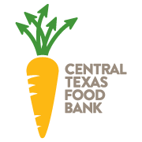

Food Resources
A great place to get food are at your local food banks and pantries. They are welcoming to all and provide the necessary resources to create your daily meals!
Below are a few good food pantries and food banks in Austin Of course, there are many more to be discovered around the city! For more information on the below mentioned areas, make sure to check out there website.

Central Texas Food Bank
With the partnership of 21 agencies across different counties in Central Texas such as HEB, the Central Texas Food Bank has helped thousands of people who are in need of food.
This food pantry is partnered with the Central Texas Food Bank Furthermore, they receive donations from a handful of local businesses including HEB, Moonlight Bakery, Starbucks, Papa John’s, Olive Garden, Red Lobster and Pizza Hut!

The mission of the hope food pantry is to alleviate hunger around communities. Volunteers here have been supplying Austin families with a variety of groceries since 2000.